falseSorry to see you go.
Uninstall false?
This removes false from your computer. Close the browser first if it's open.
Removing false
Keep this window open. It won't take long.
Preparing0%
false was removed
Thanks for trying it. You can reinstall anytime.